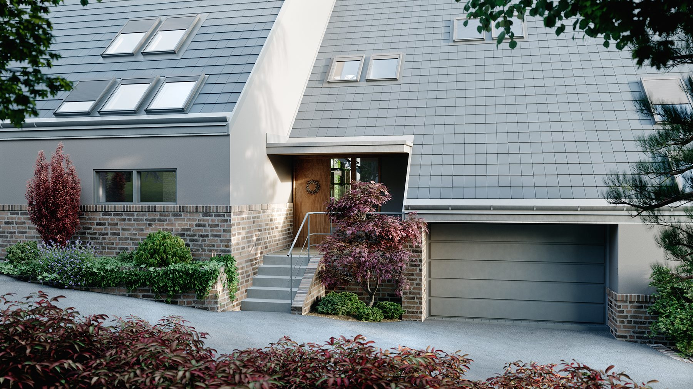
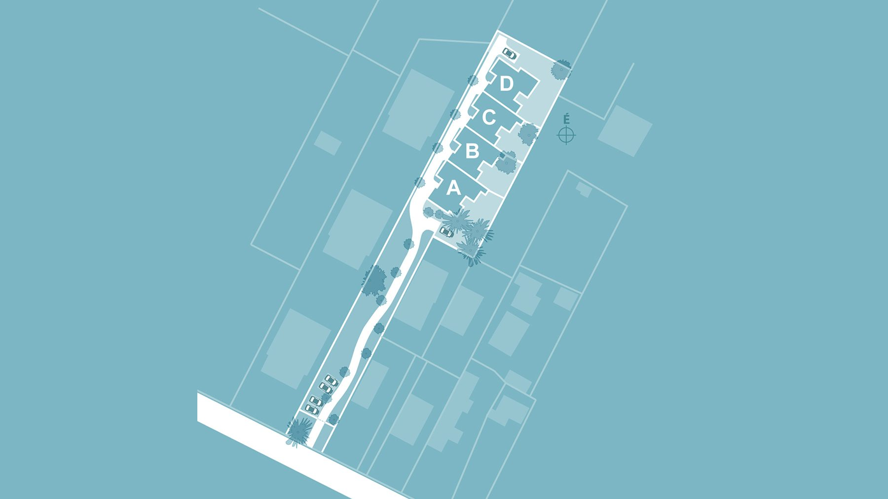
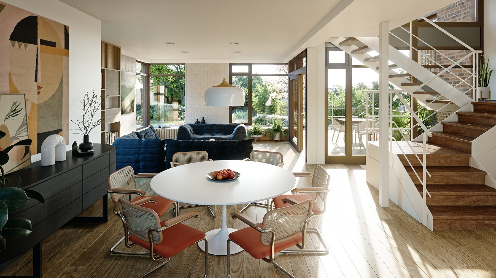
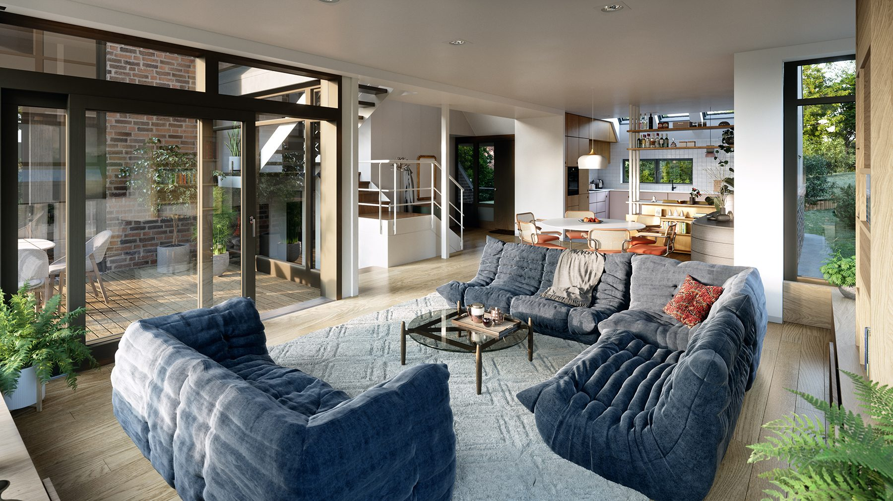
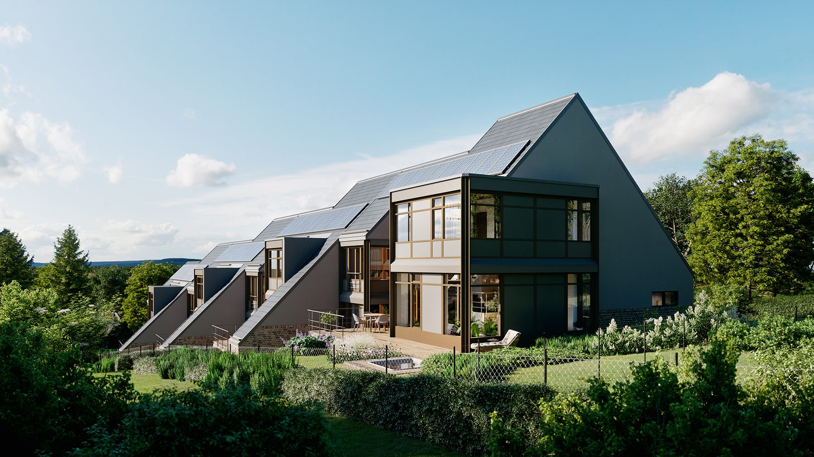
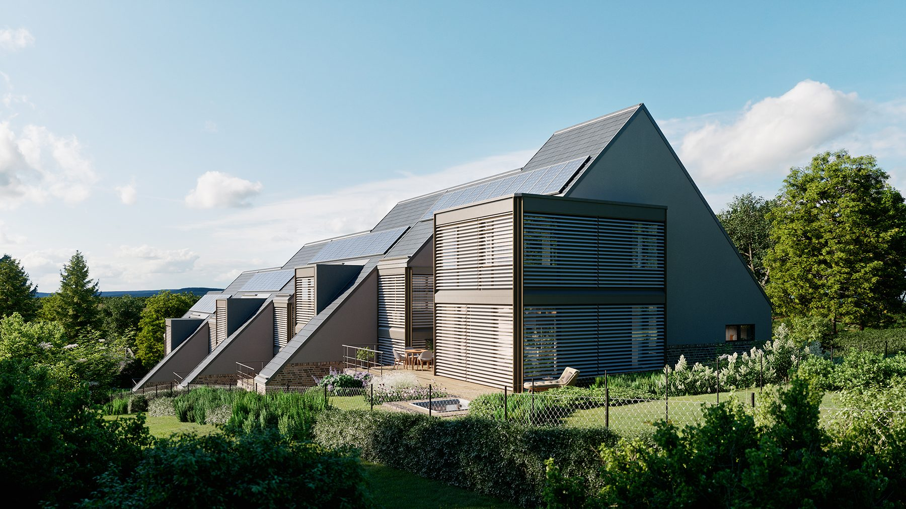

Koncepció
Egy telek, négy saját világ.
A József Attila utca 111. hosszú, mély telek: az utcától egy csendes bekötőút vezet a telek végébe, ahol a négy lakóegység a fák között áll. Görgessen, és bejárjuk.
Saját kert és terasz minden lakóegységhez, 250–260 m² élettér három szinten – húsz percre Budapest központjától.
Fedett bejárat, saját garázs, téglaburkolatú lábazat és kerámia tetőfedés. A ház az utcára visszafogott arcát mutatja – a nagy üvegfelületek a kertek és a táj felé fordulnak.
Tovább a lakásválasztóhoz
Bejárat és garázs az utca felől
Helyszínrajz · É ↑ jelölés a rajzonA József Attila utca 111. hosszú, mély telek: az utcától egy csendes bekötőút vezet a telek végébe, ahol a négy lakóegység a fák között áll. Görgessen, és bejárjuk.
A házak nem az utcafronton állnak: saját, kanyargó bekötőút vezet a telek mélyére, távol a forgalomtól és a zajtól.
Az utca felőli bejárat mellett külön parkolóhelyek várják a vendégeket, így a lakók útja szabad marad.
A négy egységre osztott épület félszintes eltolással simul az enyhén lejtős terepbe. Minden egység három szinten, 250–260 m²-en, saját bejárattal.
A nagy üvegfelületek és a teraszok a telek csendes, kerti oldala felé fordulnak. Minden lakóegységhez saját kert és terasz tartozik – a D egységnél 52,9 m²-es terasszal.
A ház a telek remek tájolását kihasználva nyílik a fény felé. A 7,5 méteres belmagasságú nappali a panorámát a ház részévé teszi.
LakásválasztóEgybenyitott nappali, étkező és konyha, áttört lépcsővel. A hatalmas üvegfelületek a teraszt és a kertet a nappali részévé teszik.

Étkező és lépcsőtér
Nappali, háttérben a konyhaA félszintes eltolás miatt minden élettér önálló, mégis egybefűzött. A belső elrendezés szintenként választható – a lakásválasztóban egyenként végigkattinthatja.
Az időjáráshoz igazodó, automatizált zsaluziák nyáron hűvösen tartják a házat, este pedig teljes magánszférát adnak. Húzza a csúszkát.


Korszerű építészeti és gépészeti megoldások: tartós, kényelmes, energiahatékony és biztonságos otthonok.
Budakeszi folyamatosan fejlődik, mégis megőrizte kisvárosi hangulatát. A József Attila utca a település egyik legszélső utcája, közel az erdőhöz – a kis méret miatt mégis minden közel van.
Érdeklődését, bejárási igényét és alaprajzi kérdéseit ugyanazon a napon megválaszoljuk. Várjuk megtisztelő érdeklődését!